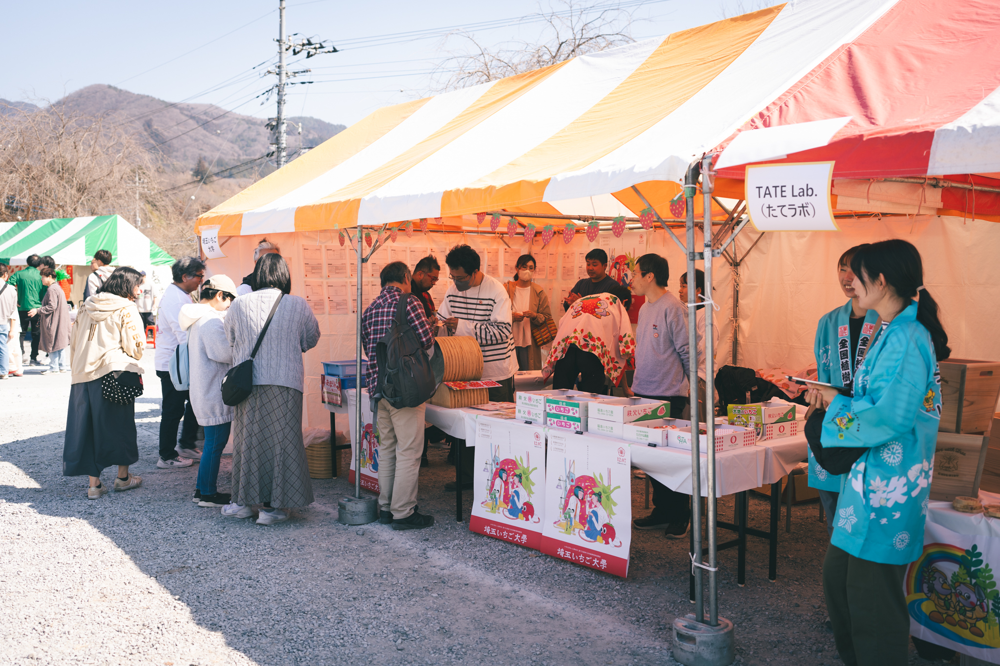
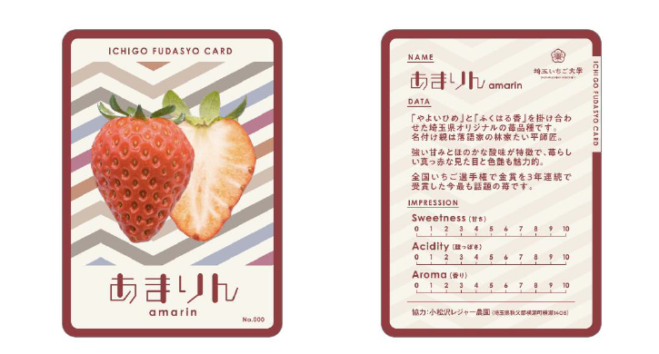
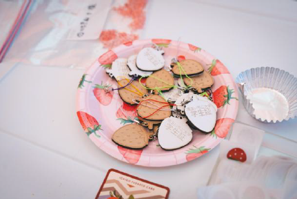
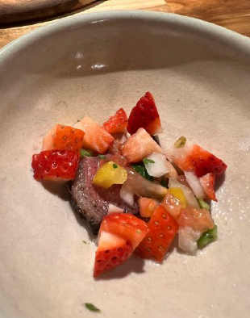
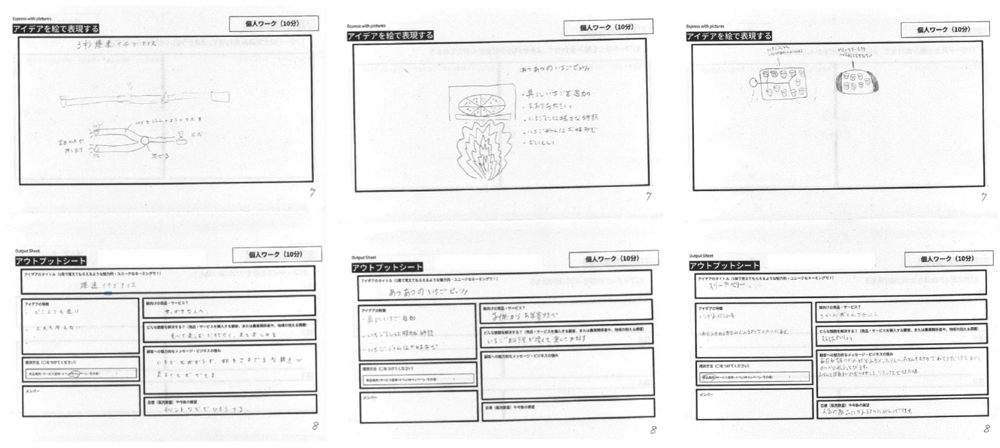

STORY
6つのアイデアから、
いちご塩へ。
農家、企業、高校生、クリエイター。
肩書きを越えて集まった人たちが、
ひとつの商品まで形にしました。

01 / GATHER
肩書きを越えて、
集まった。
いちご農家、地元企業、高校生、クリエイター、行政——45名がArea898（横瀬町）に集合。一日かけて農家見学とアイデア出しを行いました。

02 / IDEATE
6チームで、
6つのアイデアを。
参加者は6つのチームに分かれ、それぞれが「いちごの可能性」をテーマに発想。試作品をつくり、台湾祭々（横瀬町）で来場者にお披露目しフィードバックを集めました。

03 / DELIVER
1つのアイデアが、
商品に。
そのなかから、いちご塩 CHICHIBU ICHIGO SALT がパッケージ・販売まで形に。埼玉いちご祭り2026で全商品完売多数の手応え。残りのアイデアも、形になる日を目指して育てています。
6 IDEAS
生まれた、6つのアイデア
-
01 / F TEAM
いちご塩
いちごを乾燥させた新感覚調味料
商品化 -

02 / A TEAM
いちご札所カード
品種別の食べられるいちごカード
試作お披露目 -

03 / C TEAM
すっぱいちご愛
NFC搭載いちごキーホルダー
試作お披露目 -
PHOTO COMING
04 / B TEAM
いちご大福／生しぼり自販機
新製法の特製いちごレシピ
継続検討中 -

05 / D TEAM
スローなイチゴ狩り
高級コース料理用いちごソース
継続検討中 -
PHOTO COMING
06 / E TEAM
いちごラボ
いちごの可能性を研究するラボ
継続検討中
2024.12.7 第2回WS @Area898 で生まれた手書きシートをそのまま公開
EXTRA / STUDENTS
秩父高校1年生も、
129のアイデアを。
第3回WSは、秩父高校での地域探究授業として実施。 175名の高校生が一斉にいちごを起点に発想し、129件のアイデアが集まりました。 台湾祭々で展示・投票してもらい、上位は今後の事業化検討の参考に。
- 01I Love いちご13票
- 02いちごの木11票
- 03お風呂でいちご10票
- 04いちごの温泉9票
- 05いちごSNS8票
- 06いちにぎり（いちご×おにぎり）7票
※ 全48件中の上位6件。残り123件のアイデアも可能性として継続検討中。

高校生が描いたアイデアシートの一部
PARTICIPANTS
220名
第2回WS 45名 + 秩父高校 175名
IDEAS
135件
6つの商品アイデア + 秩父高校129件
FARMERS
9軒
秩父・横瀬の連携いちご農家
SALES (2026.2)
¥316K
埼玉いちご祭り2日間 / 483個販売